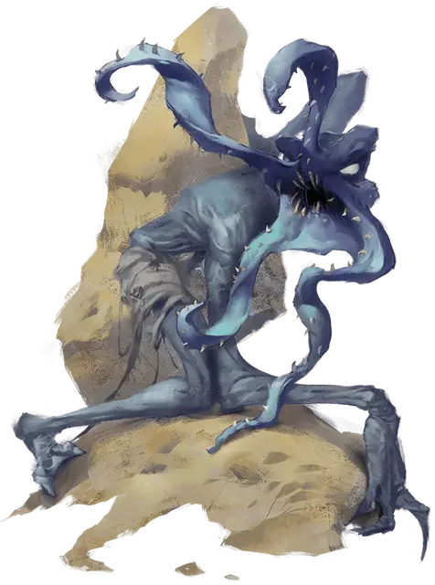

Вампирический свежеватель разума
Vampiric Mind Flayer
Средняя Нежить

Класс Доспеха 15 (природный доспех)
Хиты 85 (10к8 + 40)
Скорость 30 футов, лазая 30 футов
| мод | спас | ||
|---|---|---|---|
| СИЛ | 18 | +4 | +4 |
| ЛОВ | 18 | +4 | +7 |
| ТЕЛ | 18 | +4 | +4 |
| мод | спас | ||
|---|---|---|---|
| ИНТ | 5 | −3 | +0 |
| МДР | 15 | +2 | +5 |
| ХАР | 18 | +4 | +7 |
Навыки Восприятие +5, Скрытность +7
Сопротивление урону некротическая энергия, психическая энергия
Иммунитет к состояниям испуг, истощение, очарование
Чувства тёмное зрение 120 футов, пассивное Восприятие 15
Языки Телепатия 120 футов, но может проецировать только эмоции
Опасность 5 (1800 опыта)
Бонус мастерства +3
Особенности
Паучье лазанье. Свежеватель разума может лазать по сложным поверхностям, включая потолки, без совершения проверок характеристик.
Чувствительность к солнечному свету. Находясь на солнечном свету, свежеватель разума совершает с помехой броски атаки, а также проверки Мудрости (Восприятие), полагающиеся на зрение.
Необычная природа. Свежевателю разума не требуется воздух, пища или сон.
Действия
Мультиатака. Свежеватель разума совершает две атаки когтями или одну атаку когтями и одну атаку щупальцами.
Коготь. Рукопашная атака оружием: +7 к попаданию, досягаемость 5 фт., одна цель. Попадание: 8 (1к8 + 4) рубящего урона и 10 (3к6) урона некротической энергией.
Щупальце. Рукопашная атака оружием: +7 к попаданию, досягаемость 5 фт., одно существо. Попадание: 11 (1к6 + 4) колющего урона, и если целью является существо, оно становится схваченным (Сл высвобождения 15).
Выпивание разума. Свежеватель разума нацеливается на одно существо, которое он схватил. Цель должна преуспеть в спасброске Мудрости Сл 15 или получит урон психической энергией 14 (4к6) и 1 степень истощения. Свежеватель разума восстанавливает количество хитов, равное нанесенному урону психической энергией. Существо, хиты которого опустились до 0 в результате урона психической энергией, умирает.
Бонусные действия
Нарушение психики (перезарядка 5-6). Свежеватель разума магически испускает псионическую энергию в сфере радиусом 30 фт., с центром на себе. Каждое существо в этой области должно преуспеть в спасброске Интеллекта Сл 15 или станет недееспособным на 1 минуту. Недееспособное существо может повторить спасбросок в конце каждого из своих ходов, завершая эффект на себя в случае успеха.
Описание
Когда свежеватели разума Бладспура не смогли найти лекарства от болезни своего повелителя, их деградирующий старший мозг обратился к радикальным методам, чтобы предотвратить своё слабоумие и смерть. Результатом стали вампирические свежеватели разума — дикие монстры, порожденные головастиками-свежевателями разума, зараженными вампиризмом. Эти специализированные, но ущербные ужасы служат единственной цели: высасывать мозговые жидкости из разумных умов. После этого они возвращаются в старший мозг Бладспура, который разжижает их в своем бассейне и высвобождает украденные жидкости в гормональный рассол. Этот гротескный бальзам останавливает деградацию старшего мозга, но не помогает лечению.
Вампирические свежеватели разума — физически и психически неустойчивые существа. Отвратительные создания, они не позволяют ничему встать между ними и их экзистенциальными императивами. Хотя они обладают телепатическими способностями свежевателя разума [mind flayer], их мозг не приспособлен для использования. Вместо этого они бомбардируют близлежащих существ ментальной статикой висцеральных видений. В то время как эти хищные существа ужасны на вид, они выбивают из колеи не больше, чем другие свежеватели разума , которые считают их мерзостями.
См. дополнительно статью: "Бестиарий: Свежеватели разума"